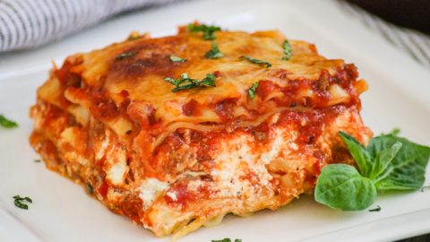

Lazanya
Lazanya, köken itibarıyla İtalyan olsa da damak zevkimize uygunluğuyla neredeyse artık bizden biri.
Lazanya, makarna hamuruyla yapılan, plaka halinde paketlenen, genellikle bolonez sosu ile birlikte fırında pişirilen İtalyan mutfağına ait nefis bir lezzet.
Umarız lazanya tarifimiz sizin de favoriniz olur.
Kaç Kişilik:
6 Kişilik
Hazırlama Süresi
20 Dakika
Pişirme Süresi
25 Dakika
Lazanya Tarifi İçin Malzemeler

- 12 yaprak lazanya
- 400 gr kıyma
- 3 yemek kaşığı sıvı yağ
- 2 adet kuru soğan
- 2 adet domates
- 2 yemek yaşığı domates salçası
- 2 diş sarımsak
- 1 tatlı kaşığı tuz
- 1,5 su bardağı sıcak su
- 2 yemek yaşığı tereyağı
- 3 su bardağı süt
- Yarım su bardağı un
- 1 çay kaşığı tuz
- Yarım çay kaşığı karabiber
Lazanya Nasıl Yapılır?
- Ayçiçek yağını ve tereyağı bir tavada kızdırın. Doğranmış soğanları 3- 4 dakika kadar kavurun. Üzerine havuçları ekleyip 3-4 dakika daha kavurmaya devam edin.
- Kavrulan havuç ve soğanların üzerine kıymayı ekleyin ve suyunu salıp çekene kadar kavurun.
- Sarımsak, tuz ve karabiberi ekleyin. Son olarak rendelenmiş domates ve defne yaprağını ekleyip harcı pişmeye bırakın.
- Domates, suyunu biraz çektikten sonra içerisine bezelyeyi de ekleyin ve iç harcını pişirmeye devam edin.
- Tüm malzemeler güzelce pişince iç harcınız hazır.
- Beşamel sosu hazırlamak için; tereyağını sos tenceresinde eritin. Unu, kokusu çıkıp renk alana kadar kavurun.
- Kavrulan una soğuk sütü ekleyin ve bir çırpıcı yardımıyla sürekli karıştırarak pişirin. Pişmeyen lazanya yaprakları kullandığınızda, normale göre beşamel sosunuzu daha sıvı olması gerekir. Bu yüzden çok kıvamlı olmamasına özen gösterin.
- Karabiber ve rendelenmiş muskat cevizini ekledikten sonra ocaktan alın.
- Fırın kabının tabanına biraz beşamel sos ve iç harçtan yayıp lazanya yapraklarını dizin.
- Sırasıyla; kıymalı harç, beşamel sos ve bir parça rendelenmiş kaşar peyniri ekleyin.
- Lazanyanın en üst katı için beşamel sos ve rendelenmiş kaşar peyniri ayırdıktan sonra bu işlemi sırasıyla tüm lazanya yaprakları için tekrarlayın.
- Kalan beşamel sos ve rendelenmiş kaşar peyniri ile lazanyanın üzerini kaplayın. Önceden ısıtılmış 180 derece fırında 20-25 dakika pişirin. Pişirme süresi fırından fırına değişiklik gösterebilir. Piştiğinden emin olana kadar kontrollü olarak pişirin.
- Fırından çıkan lazanyayı dilimledikten sonra ılık olarak servis edin. Sevdiklerinizle paylaşın.